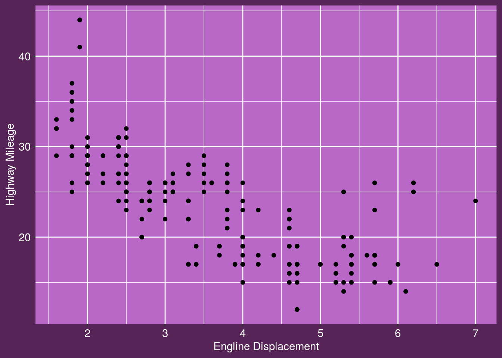

Using R Markdown
by Stringr Belle, 09 Apr 2020
This section is written in markdown. It is used primarily for discussion, explanation etc.
First let’s load package.
library(tidyverse)
library(slumdown)This would usually be about waffles… but I will do something about cars and the mpg data frame.
pic <- ggplot(data = mpg) +
geom_point(mapping = aes(x = displ, y = hwy)) +
theme_slum(palette = "kunoichi") +
xlab("Engline Displacement") +
ylab("Highway Mileage")The above chunk has creased the pic variable. To draw the plot, need to include the R command print(pic).
